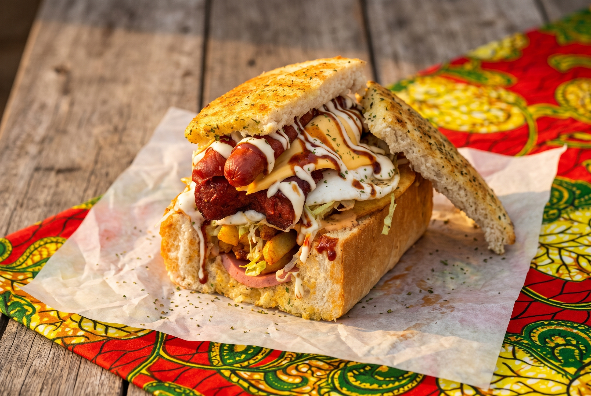

Splathlo (Kota)
A hollowed quarter loaf packed with chips, polony, cheese and atchar: township street food made to eat on the go.

The story
Splathlo, also spelled spatlo or sphatlo and known as kota, was born in the townships of Gauteng, around Johannesburg and Pretoria. The name kota comes from the way "quarter" is said, because it starts with a quarter loaf of white bread. Its layers bring many food cultures together: South Asian atchar, sausages, braai flavours and hot slap chips.
Ingredients
- ¼ loaf of white bread
- 2 slices polony
- 1 tbsp atchar
- 1 slice cheddar cheese
- 2 rashers bacon
- 2 tbsp tomato and onion relish
- 1 Russian sausage, split
- 3 tbsp chakalaka
- 1 egg
- 1 handful slap chips
- Tomato sauce and barbecue sauce
Method
1 Hollow and toast the bread
Cut the soft inside out of the quarter loaf, keeping the top piece as a lid. Toast the hollowed loaf.
2 Fry the fillings
Fry the polony, bacon, sausage and egg. Fry the chips until golden, then salt them while hot.
3 Layer it up
Fill the loaf with the polony, atchar, cheese and bacon. Spread the relish on top, add the sausage, then a thick layer of chakalaka.
4 Top and close
Pile on the chips and fried egg, add the sauces and close it with the bread lid.
Cook along
| Nutrient | Amount |
|---|---|
| Calories | 1700 kcal |
| Carbohydrates | 175 g |
| Protein | 57 g |
| Fat | 87 g |
Approximate values per serving, worked out from the ingredients.